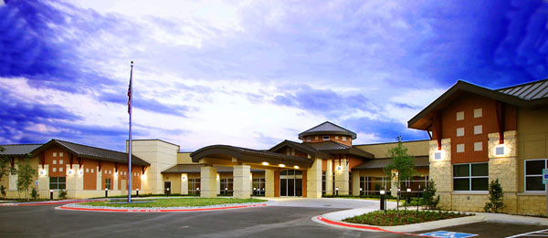

Texas Medical Center is a tax supported community hospital located in north Texas near the Red River. Founded in 1932, this hospital has provided medical support to the community for over 75 years. Now located in a state of the art facility that opened in 2008, TMC continues to provide modern medical procedures to all members of the communities located in the hospital district. The hospital is controlled by a board whose membership is selected by the community by election. The hospital has a chief administrator that is responsible for the day to day operation of the facility.